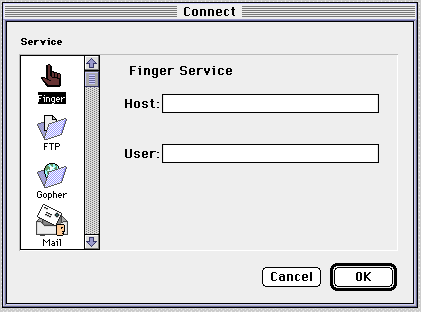
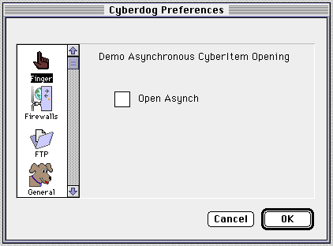

About Cyberdog Services
When a Cyberdog session is created, the session creates a Cyberdog service for each service resource ('srvc') that the session finds in the Cyberdog library's folder or subfolders. (The library's folder typically is named "Cyberdog.") Each service manages a protocol, which is implemented by a Cyberdog item class, a Cyberdog stream class, and panel parts.A user can specify the service to use in the Connect To panel. The panel part creates the Cyberdog item that specifies the URL. Figure 1 shows the Connect To panel for the Finger service sample.
Figure 1 The Connect To panel for the Finger service sample

The Cyberdog item may be opened synchronously or asynchronously. The Finger sample allows the user to specify how to open the item by using the service's Preferences panel, as shown in Figure 2.
Figure 2 The Preferences panel for the Finger service sample
- Note
- The Finger protocol does not require that the item be opened asynchronously.

In this example, preferences are stored in the Internet Config file. To provide access to Internet Config, you should be familiar with the Internet Config API. For more information about Internet Config, see the Internet Config SDK folder on the Cyberdog Programmer's Kit CD.
A service may provide its own menu, or it may add items to the Cyberdog menu. The Finger sample shows how to add an item to the Cyberdog menu.
Data retrieval for the item is handled by a Cyberdog stream. In the example, the stream class implements the Finger protocol using TCP.